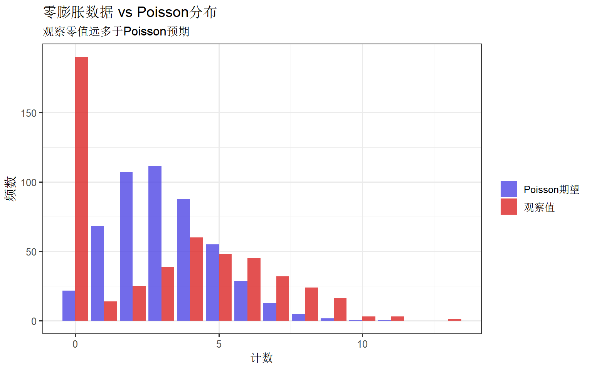

library(pscl)
library(MASS)
library(ggplot2)
library(dplyr)
set.seed(42)
theme_set(theme_bw(base_size = 12))零膨胀模型完全指南
统计分析方法
基础回归
回归分析
计数数据
零膨胀Poisson和负二项模型处理计数数据中过多零值问题，适用于医疗使用、事故计数等场景。
零膨胀模型简介
当计数数据中零值过多时，标准的Poisson或负二项回归可能拟合不佳。零膨胀模型假设数据来自两个过程：一个产生”结构性零”，另一个产生标准计数分布。
何时使用零膨胀模型？
| 数据特征 | 可能原因 | 解决方案 |
|---|---|---|
| 零值比例过高 | 两类人群混合 | 零膨胀模型 |
| 非参与者 | “从不”做某事的人 | ZIP/ZINB |
| 测量限制 | 无法检测到低值 | Hurdle模型 |
模型类型
- ZIP：零膨胀Poisson
- ZINB：零膨胀负二项（处理过度离散）
- Hurdle：两部分模型（跨越零的障碍）
安装与加载
第一部分：理解零膨胀
模拟零膨胀数据
# 模拟吸烟数据：部分人从不吸烟，吸烟者服从Poisson
n <- 500
never_smoker <- rbinom(n, 1, 0.4) # 40%从不吸烟
cigarettes <- ifelse(never_smoker == 1, 0, rpois(n, lambda = 5))
# 添加协变量
age <- round(rnorm(n, 40, 10))
male <- rbinom(n, 1, 0.5)
sim_data <- data.frame(cigarettes, age, male, never_smoker)
# 零值比例
cat("零值比例:", mean(cigarettes == 0), "\n")零值比例: 0.38 cat("Poisson期望零值比例:", dpois(0, mean(cigarettes)), "\n")Poisson期望零值比例: 0.04354328 可视化零膨胀
# 比较观察值与Poisson分布
obs_counts <- table(factor(cigarettes, levels = 0:max(cigarettes)))
pois_expected <- dpois(0:max(cigarettes), lambda = mean(cigarettes)) * n
compare_df <- data.frame(
count = 0:max(cigarettes),
observed = as.numeric(obs_counts),
expected = pois_expected
) %>%
tidyr::pivot_longer(-count, names_to = "type", values_to = "frequency")
ggplot(compare_df, aes(x = count, y = frequency, fill = type)) +
geom_col(position = "dodge", alpha = 0.8) +
scale_fill_manual(
values = c("#4f46e5", "#dc2626"),
labels = c("Poisson期望", "观察值")
) +
labs(
title = "零膨胀数据 vs Poisson分布",
subtitle = "观察零值远多于Poisson预期",
x = "计数", y = "频数", fill = ""
)
第二部分：标准计数模型
Poisson回归
# 标准Poisson
pois_fit <- glm(cigarettes ~ age + male, data = sim_data, family = poisson)
summary(pois_fit)
Call:
glm(formula = cigarettes ~ age + male, family = poisson, data = sim_data)
Coefficients:
Estimate Std. Error z value Pr(>|z|)
(Intercept) 1.0113328 0.1047241 9.657 < 2e-16 ***
age 0.0002191 0.0024223 0.090 0.928
male 0.2187046 0.0512998 4.263 2.01e-05 ***
---
Signif. codes: 0 '***' 0.001 '**' 0.01 '*' 0.05 '.' 0.1 ' ' 1
(Dispersion parameter for poisson family taken to be 1)
Null deviance: 1818.1 on 499 degrees of freedom
Residual deviance: 1799.7 on 497 degrees of freedom
AIC: 2854.2
Number of Fisher Scoring iterations: 5# 检查过度离散
cat("\n过度离散检验:\n")
过度离散检验:cat("残差偏差:", deviance(pois_fit), "\n")残差偏差: 1799.702 cat("自由度:", df.residual(pois_fit), "\n")自由度: 497 cat("离散参数估计:", deviance(pois_fit) / df.residual(pois_fit), "\n")离散参数估计: 3.621131 负二项回归
# 负二项回归
nb_fit <- glm.nb(cigarettes ~ age + male, data = sim_data)
summary(nb_fit)
Call:
glm.nb(formula = cigarettes ~ age + male, data = sim_data, init.theta = 0.7613010446,
link = log)
Coefficients:
Estimate Std. Error z value Pr(>|z|)
(Intercept) 1.0109883 0.2372521 4.261 2.03e-05 ***
age 0.0002277 0.0055321 0.041 0.9672
male 0.2187055 0.1148489 1.904 0.0569 .
---
Signif. codes: 0 '***' 0.001 '**' 0.01 '*' 0.05 '.' 0.1 ' ' 1
(Dispersion parameter for Negative Binomial(0.7613) family taken to be 1)
Null deviance: 571.93 on 499 degrees of freedom
Residual deviance: 568.32 on 497 degrees of freedom
AIC: 2283.6
Number of Fisher Scoring iterations: 1
Theta: 0.7613
Std. Err.: 0.0769
2 x log-likelihood: -2275.6000 第三部分：零膨胀Poisson (ZIP)
拟合ZIP模型
# 零膨胀Poisson
zip_fit <- zeroinfl(cigarettes ~ age + male | 1, data = sim_data)
summary(zip_fit)
Call:
zeroinfl(formula = cigarettes ~ age + male | 1, data = sim_data)
Pearson residuals:
Min 1Q Median 3Q Max
-1.04840 -1.03531 -0.00795 0.68688 3.17640
Count model coefficients (poisson with log link):
Estimate Std. Error z value Pr(>|z|)
(Intercept) 1.5839089 0.1101139 14.384 <2e-16 ***
age -0.0002166 0.0025503 -0.085 0.932
male 0.0659636 0.0523095 1.261 0.207
Zero-inflation model coefficients (binomial with logit link):
Estimate Std. Error z value Pr(>|z|)
(Intercept) -0.50793 0.09323 -5.448 5.09e-08 ***
---
Signif. codes: 0 '***' 0.001 '**' 0.01 '*' 0.05 '.' 0.1 ' ' 1
Number of iterations in BFGS optimization: 9
Log-likelihood: -1013 on 4 Df模型解读： - Count model：计数部分（给定不是结构零） - Zero-inflation model：零膨胀部分（是结构零的概率）
ZIP模型扩展
# 零膨胀部分也包含协变量
zip_full <- zeroinfl(cigarettes ~ age + male | age + male, data = sim_data)
summary(zip_full)
Call:
zeroinfl(formula = cigarettes ~ age + male | age + male, data = sim_data)
Pearson residuals:
Min 1Q Median 3Q Max
-1.1453 -0.9522 0.0747 0.7656 3.1248
Count model coefficients (poisson with log link):
Estimate Std. Error z value Pr(>|z|)
(Intercept) 1.5863794 0.1101281 14.405 <2e-16 ***
age -0.0002295 0.0025529 -0.090 0.928
male 0.0629540 0.0522363 1.205 0.228
Zero-inflation model coefficients (binomial with logit link):
Estimate Std. Error z value Pr(>|z|)
(Intercept) -0.243227 0.389458 -0.625 0.532
age -0.001260 0.009137 -0.138 0.890
male -0.411895 0.187414 -2.198 0.028 *
---
Signif. codes: 0 '***' 0.001 '**' 0.01 '*' 0.05 '.' 0.1 ' ' 1
Number of iterations in BFGS optimization: 11
Log-likelihood: -1011 on 6 Df第四部分：零膨胀负二项 (ZINB)
# 添加过度离散
sim_data$cigs_od <- ifelse(
sim_data$never_smoker == 1, 0,
rnbinom(n, size = 2, mu = 5) # 负二项分布
)
# ZINB模型
zinb_fit <- zeroinfl(cigs_od ~ age + male | 1, data = sim_data, dist = "negbin")
summary(zinb_fit)
Call:
zeroinfl(formula = cigs_od ~ age + male | 1, data = sim_data, dist = "negbin")
Pearson residuals:
Min 1Q Median 3Q Max
-0.7122 -0.6990 -0.4612 0.2703 9.5588
Count model coefficients (negbin with log link):
Estimate Std. Error z value Pr(>|z|)
(Intercept) 1.587020 0.252072 6.296 3.06e-10 ***
age -0.001826 0.005845 -0.312 0.7548
male 0.212240 0.117608 1.805 0.0711 .
Log(theta) 0.263175 0.168901 1.558 0.1192
Zero-inflation model coefficients (binomial with logit link):
Estimate Std. Error z value Pr(>|z|)
(Intercept) -0.6254 0.1436 -4.356 1.33e-05 ***
---
Signif. codes: 0 '***' 0.001 '**' 0.01 '*' 0.05 '.' 0.1 ' ' 1
Theta = 1.3011
Number of iterations in BFGS optimization: 11
Log-likelihood: -1102 on 5 Df第五部分：Hurdle模型
Hurdle模型将数据分为两部分：零vs非零（二项部分），非零值的大小（截断计数部分）。
# Hurdle Poisson
hurdle_fit <- hurdle(cigarettes ~ age + male | age + male, data = sim_data)
summary(hurdle_fit)
Call:
hurdle(formula = cigarettes ~ age + male | age + male, data = sim_data)
Pearson residuals:
Min 1Q Median 3Q Max
-1.14522 -0.95217 0.07471 0.76557 3.12475
Count model coefficients (truncated poisson with log link):
Estimate Std. Error z value Pr(>|z|)
(Intercept) 1.5862882 0.1098622 14.439 <2e-16 ***
age -0.0002273 0.0025462 -0.089 0.929
male 0.0629617 0.0522351 1.205 0.228
Zero hurdle model coefficients (binomial with logit link):
Estimate Std. Error z value Pr(>|z|)
(Intercept) 0.226381 0.384674 0.589 0.5562
age 0.001219 0.009022 0.135 0.8925
male 0.412954 0.185291 2.229 0.0258 *
---
Signif. codes: 0 '***' 0.001 '**' 0.01 '*' 0.05 '.' 0.1 ' ' 1
Number of iterations in BFGS optimization: 9
Log-likelihood: -1011 on 6 DfZIP vs Hurdle 区别
| 特点 | ZIP | Hurdle |
|---|---|---|
| 零来源 | 结构零 + 采样零 | 仅”跨栏”决定 |
| 非零部分 | 完整分布 | 截断分布 |
| 适用场景 | 两类人群混合 | 参与/不参与决策 |
第六部分：模型比较
AIC/BIC比较
models <- list(
Poisson = pois_fit,
NegBin = nb_fit,
ZIP = zip_fit,
Hurdle = hurdle_fit
)
comparison <- data.frame(
Model = names(models),
AIC = sapply(models, AIC),
BIC = sapply(models, BIC),
LogLik = sapply(models, logLik)
)
comparison <- comparison[order(comparison$AIC), ]
print(comparison) Model AIC BIC LogLik
Hurdle Hurdle 2033.945 2059.232 -1010.972
ZIP ZIP 2034.800 2051.658 -1013.400
NegBin NegBin 2283.600 2300.458 -1137.800
Poisson Poisson 2854.179 2866.823 -1424.090Vuong检验
# ZIP vs Poisson
vuong_test <- vuong(zip_fit, pois_fit)Vuong Non-Nested Hypothesis Test-Statistic:
(test-statistic is asymptotically distributed N(0,1) under the
null that the models are indistinguishible)
-------------------------------------------------------------
Vuong z-statistic H_A p-value
Raw 13.76219 model1 > model2 < 2.22e-16
AIC-corrected 13.72868 model1 > model2 < 2.22e-16
BIC-corrected 13.65806 model1 > model2 < 2.22e-16print(vuong_test)NULL第七部分：实战案例
医疗就诊次数
# 模拟医疗就诊数据
n <- 1000
# 部分人健康不需就诊，其他人根据健康状况就诊
healthy <- rbinom(n, 1, 0.3)
chronic <- rbinom(n, 1, 0.25)
income <- rnorm(n, 50000, 15000)
# 就诊次数
lambda <- exp(0.5 + 0.8 * chronic - 0.00001 * income)
visits <- ifelse(healthy == 1, 0, rpois(n, lambda))
health_data <- data.frame(visits, chronic, income = income / 1000, healthy)
cat("就诊统计:\n")就诊统计:cat("零值比例:", mean(visits == 0), "\n")零值比例: 0.513 cat("平均就诊次数:", mean(visits), "\n")平均就诊次数: 0.934 # 比较模型
pois_health <- glm(visits ~ chronic + income, data = health_data, family = poisson)
zip_health <- zeroinfl(visits ~ chronic + income | 1, data = health_data)
zinb_health <- zeroinfl(visits ~ chronic + income | 1, data = health_data, dist = "negbin")
cat("模型AIC比较:\n")模型AIC比较:cat("Poisson:", AIC(pois_health), "\n")Poisson: 2679.812 cat("ZIP:", AIC(zip_health), "\n")ZIP: 2561.69 cat("ZINB:", AIC(zinb_health), "\n")ZINB: 2563.484 # 最佳模型系数解释
cat("\nZIP模型结果:\n")
ZIP模型结果:summary(zip_health)
Call:
zeroinfl(formula = visits ~ chronic + income | 1, data = health_data)
Pearson residuals:
Min 1Q Median 3Q Max
-1.0719 -0.7452 -0.6444 0.4327 4.6629
Count model coefficients (poisson with log link):
Estimate Std. Error z value Pr(>|z|)
(Intercept) 0.58663 0.12113 4.843 1.28e-06 ***
chronic 0.80480 0.07570 10.631 < 2e-16 ***
income -0.01151 0.00236 -4.877 1.08e-06 ***
Zero-inflation model coefficients (binomial with logit link):
Estimate Std. Error z value Pr(>|z|)
(Intercept) -0.8102 0.1216 -6.661 2.72e-11 ***
---
Signif. codes: 0 '***' 0.001 '**' 0.01 '*' 0.05 '.' 0.1 ' ' 1
Number of iterations in BFGS optimization: 10
Log-likelihood: -1277 on 4 Df常用代码速查
# ===== 零膨胀模型 =====
library(pscl)
# ZIP
zeroinfl(y ~ x1 + x2 | z1, data = df)
# ZINB
zeroinfl(y ~ x1 + x2 | z1, data = df, dist = "negbin")
# Hurdle
hurdle(y ~ x1 + x2 | z1, data = df)
# ===== 模型比较 =====
AIC(model1, model2)
vuong(zip_model, poisson_model)
# ===== 预测 =====
predict(fit, type = "response") # 期望计数
predict(fit, type = "zero") # 零膨胀概率小结
零膨胀模型选择指南：
- 先检查零值过多：观察比例 vs Poisson期望
- 检查过度离散：偏差/自由度 > 1
- 选择模型：
- 结构零 + 均匀离散 → ZIP
- 结构零 + 过度离散 → ZINB
- 参与决策 → Hurdle
关键：理解你的零值来自何处（两类人群？还是跨栏决策？）
参考资源
- pscl包文档
- Zeileis et al. (2008). Regression Models for Count Data in R.
- UCLA IDRE指南